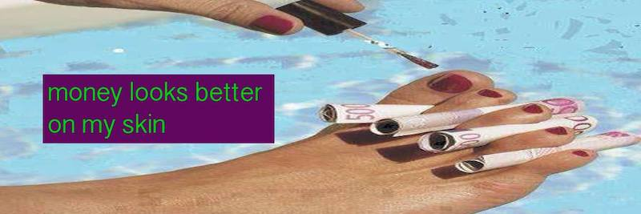
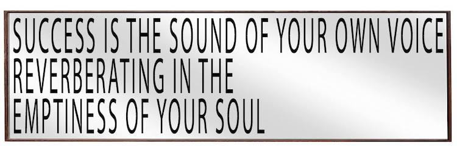
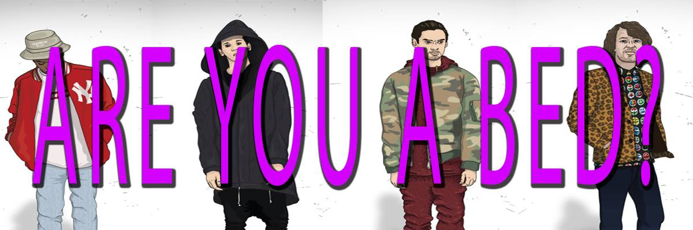

Greetings from Below. We made Nordic names to appear more white, more assimilated, more stylized like IKEA furniture tags. it was only natural this would be the next step to fame and excellence. We were tired of the powerlessness of creating, then critiquing culture. Artists might as well be artisans or court jesters, or even better, digital prophets and trend forecasters. We needed a change of life Style, and this would be activated by an inaugural Scandinavian name change. Race and ethnicity are social construct anyway. It's the thought that counts. Even society is a social construct!
Intellectuals call what we have "social capital", but we know, at best, it's just a fine balance of showmanship and passion. Realizing we were failures at climbing the social ladder, we stayed up late reading guides on how to become dismissive and charming, high functioning sociopaths. We gave each other papercuts, stole from stores, lied and cheated to our loved ones and talked shit about our enemies. We knew whatever we were doing was going to be a drop in the ocean. Phrased the right way, anything can be easily painted as a disaster. And there's tons of money to be made from disaster. This was is just one of a million emergencies–the quest for productive mediocrity. We are Russian metro dogs on the run, sniffing our way through the city, while taller humans look on with disgust and amusement. Disgruntled and powerless young folk turn into old men yelling at clouds.
Gen Y's growing pains are slowing down the economy. No one wants to work harder for less money. No one wants to undersell for professional titles and sexy results. Entitled, overeducated, ambitious, competitive, ingrateful, idealistic, class-fluid, MacBook-touting imbeciles. Too inexperienced with life to make any insightful statements. How to appease our young and upcoming minds after the crisis of capitalism? You're looking for freedom; I'm looking at money.
"If someone acts crazy, you have to act crazier."
This is what we know: if someone wants to work with you, they'll be active. You can smell forced socializing from miles away. Meeting people is meaningless if there's no real desire from either party. Not that you couldn't get surprised by humans, in good and bad. And if you encounter the latter, maybe warn your closest friends? Yes, of course. But only if you know what you're saying. Keep your gossip-to-info ratio in check. Colloquial tittle-tattle may be empowering, or entertaining at the very least. You may think you have have dirty secrets, or you may have no secrets, but you want to keep your professional enigma flowing.If you find the energy to meet whoever thinks you're important enough to meet them, don't be generic, pleasant, or nice. Remember: Mediocrity is unmemorable.
"No one wants to be a Noughties burnout by the time they're thirty-five."
A creative career is a minefield of moving targets. Rarely we do things for a good reason, but many are the times when we exercise obedience at the altar of conventions. Starry-eyed under a bleak, mute Nordic sky, waiting for rain when the forecast has been dead set on a permanent dry season for you and your peers. But another sun rises and we go to work or try to find it, and we stick to the ideals picked up from MIT books when we were 19. No matter how hard it is to stay awake, cut dairy, pay rent and buy local, creativity always presents itself as a career, a hobby, an unwritten novel. Perhaps a casual Sunday afternoon in the woodshop instead of low budget flights to self-funded art fair booths where no one comes to buy your product. There are no missed chances, there are only more new opportunities. It's Creativity: you're living it!
Sometimes you drink wine on your credit card and ask yourself if art or expression is meaningful anymore. Are there unique emotions? Are there authentic experiences that don't require reflection? Am I too easily amused? Am I easily offended? Why be angry? Why suffer out loud? Is anything worth announcing? Why live publicly? Will opting out help? Why quit Facebook when the thrill of friendship and belonging will ultimately rope me back?
Everything you've been cultured to believe is incongruous with surviving capitalism. "Either way, it's all an illusion and I don't care", you tell yourself. But the nagging sensation of self-doubt grows year by year... discontents with underpayment, debt, professional jealousy and an all-consuming lack of direction fuel the growing stormcloud of unwritten social knowledge: Of who's represented by who, who pissed of who, sold what to who, met with who and slept with whom, went to which foundation, had lunch with who and collaborated with who, and where they got the money from... as the world continues to turn.
It's not new news. The art world is a conspiracy to turn the left's creative energy into financial investment for 1%. Every aspect and experience of your cultural life becomes usurped and destroyed by private interest. Chatting leads to ad revenue. Phone games breed addiction. Gossip becomes word of mouth. Purchases become data metrics. Cigarette bumming leads to specialty vaporizers. Living cheap leads to gentrification. Everything is so profoundly transactional. You deserve worse, and you are literally worth less. But consider this: give fewer fucks about stuff that people with high power jobs in institutions impose on you. Don't look at paintings, look at your money. You make spending time matter, and it's your feet that can get you out of a hopeless artist talk.
Svea Holloway is a familiar stranger with hypnotic seduction. She can take you to the moon and back. A smooth and supple liquid containing cherry and chocolatey aromas. Looking for love from Chicago to Paris. Her strengths are roses, poetry, noise music, the French New Wave, and endless rope for mean men. No fats and no femmes... just kidding! Thou shalt not seek drugs. Yet if they are there, drugs seem to do her. After all, it's all about CONTROL.
Svea has no secrets; she's an open book. Wine in the morning, bland soups for dinner and cookies for breakfast. She's making a list and checking you out twice. Currently processing views from the ivory tower. Baby you're a song, you make me want to roll my windows down, and cruise.
Göran Jacotey has a heart of gold. A visionary gender traitor descending from Drama, Greece. Candy hearts and flawness nails never hurt anyone! Göran is sweet like iced tea on a summer's day. Romance is rare, so pick your petals slowly. When he dips you dip, then we dip. With the right attitude, you can pull off any pattern. Blues, greens, and pinks. I am chiffon; I am satin. I am on fire. Sashay away. On the search for an undiscrete femme companion: beauty queens, peach blossoms and drag knights. This is not a joke; where there is a will there is Göran.
Pappa Modig (White Mage, human) is an orphan who was raised by several IT service desk clerks in Northwest Sweden. This is why he has a flair for tech talk and geekspeak, and has +30% +1d6 to all attempts on help desk calls. Pappa is equipped with the Ring of Relativity (Protection from Careerism, +10 to cocktail talk), and Sony Xperia Z3 mobile phone. They have huge bonuses for all saving throws when needed to escape an opening party. Alas, Pappa can't really handle drugs or druggy socializing due to the strict Northern European diet and has -50% on poisoning and Agreeing to Follow Hippies to Second Location. In battle, Pappa opts for long-distant weapons: Optic Fibre Staff of Online Collaboration, and spells such as Word Of Mouth and Infinite Negativity.
Jens Chan became a certified hater in 2016. She tries her best to adapt to social moors of neurotypical capitalism. Her Myers Briggs type shifted from INTP to INTJ in a matter of 3 years. She is likely to give you a good reason for hating anything you bring up. Jens puts her commitments front and center. Leadership, leadership, leadership. There's no (time for) "you" on her team. She's quite capable of charming you but most days she lacks the serotonin to self motivate for teamplay. It's not because she is contrarian. Her vices are naps, nicotine gum, and correcting punctuation and grammar. She considers none of the above to be weaknesses, but rather cut-and-dry lifestyle decisions that have defined her current success.